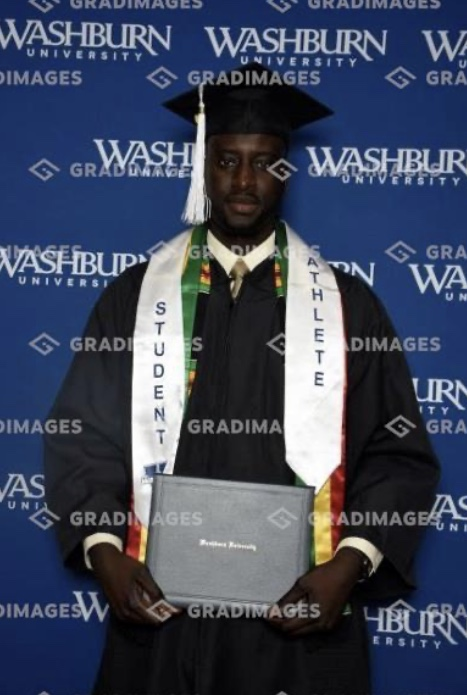

Education



- WASHBURN UNIVERSITY -Degree in Business Management.
- ClOUD COUNTY COMMUNITY COLLEGE -Major in Business Administration.
- LEE ACADEMY -High School Diploma.
My educational journey has been shaped by these key institutions, each contributing to my academic and professional growth. At Lee Academy, I was a member of the Men’s Basketball Team, which played a pivotal role in developing my leadership and teamwork skills. At Cloud County Community College, I continued to be an active member of the Men’s Basketball Team, further honing my abilities both on and off the court. Finally, at Washburn University, I was part of the Men’s Basketball Team, where my experiences as a student-athlete enriched my university experience and prepared me for future challenges.